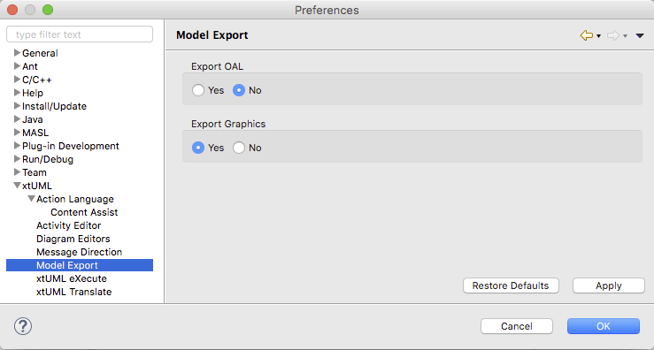

Include (or not) the action bodies' OAL in the export file.
Include (or not) the canvas graphical data in the export file.
If a model is exported without graphics, it may still be imported back into
BridgePoint. The user will then have to perform the BridgePoint Utilities > Reconcile Graphics
action of the context menu in order to work with the model. Note that only structural
graphical data can be recreated by the tool. User graphical layout information
is lost.
